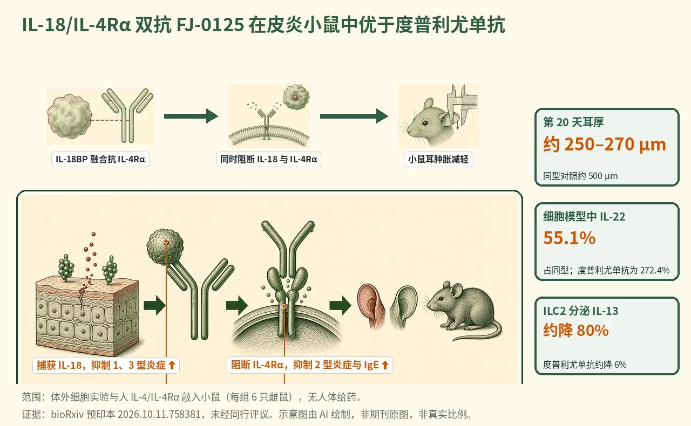

同时阻断 IL-18 与 IL-4Rα：双抗 FJ-0125 在特应性皮炎小鼠模型中优于度普利尤单抗
一篇预印本将天然 IL-18 诱饵蛋白 IL-18BP 与新的人源化抗 IL-4Rα 抗体融合，制成双特异性抗体 FJ-0125。在细胞实验和金黄色葡萄球菌相关皮炎小鼠模型中，它对 1、2、3 型炎症的抑制比度普利尤单抗或 IL-18BP-Fc 单药更全面，并阻止了单独阻断 IL-4Rα 时出现的 IL-22 升高。
预印本：本研究尚未经过同行评审，结论可能改变。

- 单个分子可同时结合 IL-18 与 IL-4Rα，亲和力在皮摩尔到亚纳摩尔级
- 阻断 IL-4/IL-13 信号的效力与度普利尤单抗相当，并能中和人和小鼠 IL-18
- 在模拟皮肤—免疫信号的细胞模型中，度普利尤单抗使 IL-22 升高 2.7 倍，FJ-0125 阻止了这一升高
- 在人 IL-4/IL-4Rα 敲入小鼠中，FJ-0125 使耳部肿胀接近正常，优于两种单靶点药物
示意图概括了 FJ-0125 的双重作用：IL-18BP 臂捕获角质形成细胞在屏障受损或金黄色葡萄球菌刺激下释放的 IL-18，抑制 1 型和 3 型（含 IL-22）炎症；抗 IL-4Rα 臂阻断 IL-4/IL-13 信号，抑制 2 型炎症和 IgE。
研究背景与待解问题
特应性皮炎（AD）以 2 型免疫（IL-4、IL-13）为主，但 1 型（IFN-γ）和 3 型（IL-17/IL-22）炎症也参与其中，并随病程、部位、年龄和族裔而变化。阻断 IL-4 受体 α 链的度普利尤单抗证实了 2 型通路是有效靶点，但相当一部分患者只是部分缓解，或疗效逐渐减弱，甚至出现反常炎症，残余病情常与非 2 型炎症有关。
作者把注意力放在 IL-18 上。IL-18 是皮肤屏障受损或接触金黄色葡萄球菌时由角质形成细胞释放的警报素，可能是上游的放大器：IL18R1 附近的遗传变异与 AD 风险相关，IL-18 水平与病情严重程度相关。此外，IL-4 会抑制 T 细胞上 IL-18 受体的表达，而在患者中，阻断 IL-4Rα 与 IL-18 升高和 IL-22 持续存在有关。研究要回答的是：用一个分子同时阻断 IL-18 和 IL-4Rα，能否比单独阻断任一通路更好地控制三类炎症。
研究设计
团队先制备了新的人源化抗 IL-4Rα 抗体 hIL4R-0125（亲和力 5.0 × 10⁻¹² M），再将人体天然的 IL-18 诱饵蛋白 IL-18BP 与之融合，采用杵臼结构（knob-into-hole）IgG4 骨架，并引入突变去除 Fc 效应功能。他们在五组实验中将 FJ-0125 与度普利尤单抗、IL-18BP-Fc 和同型对照比较：
- 结合实验。
- IL-4/IL-13 报告基因细胞。
- IL-18 刺激的人和小鼠免疫细胞。
- 人 ILC2 和已活化的 Th2 细胞。
- 共培养体系：经金黄色葡萄球菌刺激的角质形成细胞先激活树突状细胞，再由树突状细胞激活初始 T 细胞。
体内实验使用携带人 IL-4 和人 IL-4Rα 的敲入小鼠，在耳部涂抹 MC903 并接种金黄色葡萄球菌 Mu50 诱导皮炎。每组 6 只，从第 5 天开始按大致等摩尔剂量给药，评估者对分组不知情。
核心结果
同时结合两个靶点，效力与度普利尤单抗相当
FJ-0125 与人 IL-18 的亲和力为 1.5 × 10⁻¹⁰ M，与 IL-4Rα 为 2.4 × 10⁻¹¹ M，并能同时结合两者。它阻断 IL-4 和 IL-13 信号的 IC50 分别为 0.33 nM 和 0.15 nM，度普利尤单抗为 0.27 nM 和 0.10 nM。它中和人 IL-18（IC50 0.27 nM）和小鼠 IL-18（0.30 nM）的效力与 IL-18BP-Fc（0.26 nM）接近。它不能阻断一种不与 IL-18BP 结合的诱饵抗性 IL-18 变体（DR-18），说明中和 IL-18 的作用来自 IL-18BP 臂。
在人源细胞中抑制更全面
IL-18 与 TSLP 联合可强力诱导 ILC2 分泌 IL-13。FJ-0125 使其下降约 80%，IL-18BP-Fc 约 68%，度普利尤单抗约 6%。在已活化的 Th2 细胞中，IL-18 使 IL-5、IL-13、IFN-γ 和 IL-22 升高；FJ-0125 使四者都回到接近未刺激的水平，IL-18BP-Fc 的效果与之相当；度普利尤单抗只轻度降低了 IL-5，IL-22 仍不低于对照水平。
共培养中度普利尤单抗升高 IL-22，FJ-0125 没有
在角质形成细胞—树突状细胞—T 细胞共培养中，FJ-0125 使 TARC 降至对照的 17.7%，IL-13 降至 21.3%，IFN-γ 降至 30.8%，IL-22 降至 55.1%。度普利尤单抗明显降低 TARC（15.4%）和 IL-13（36.7%），但 IFN-γ 仍为 113.3%，IL-22 升至 272.4%。IL-18BP-Fc 降低了 IFN-γ（43.3%）和 IL-22（47.6%），但对 TARC（76.9%）和 IL-13（71.3%）只有部分作用。
小鼠皮肤炎症控制更好
同型对照组小鼠的耳厚从约 200 μm 增至第 20 天的约 500 μm。FJ-0125 组维持在约 250–270 μm（与对照相比 P < 0.0001），显著低于度普利尤单抗组和 IL-18BP-Fc 组。在耳组织中，FJ-0125 降低了检测的全部六种细胞因子：IL-4、IL-13、IFN-γ、IL-22、IL-17 和 IL-6。度普利尤单抗只降低了 2 型细胞因子，IL-22 有升高趋势但未达统计学显著；IL-18BP-Fc 主要降低 IFN-γ 和 IL-22。血清 IgE 在 FJ-0125 组和度普利尤单抗组下降，IL-18BP-Fc 组没有变化。
机制解读
论文所证实的： FJ-0125 可同时结合 IL-18 与 IL-4Rα；阻断 IL-4/IL-13 的效力与度普利尤单抗相当，中和 IL-18 的效力与 IL-18BP-Fc 相当，且中和作用依赖 IL-18BP 臂（对诱饵抗性 DR-18 无效）。在 ILC2、Th2 细胞、角质形成细胞—树突状细胞—T 细胞共培养和一个敲入小鼠模型中，它同时抑制 1、2、3 型炎症读数，并在共培养中阻止了度普利尤单抗引起的 IL-22 升高（2.7 倍；小鼠中为不显著的升高趋势）。
作者假设： 作者认为，阻断 IL-4Rα 会解除 IL-4/STAT6 对 T 细胞 IL-18Rα 表达的抑制，使细胞对 IL-18 更敏感，从而放大 IL-18 驱动的 1 型/3 型炎症；同时中和 IL-18 可抵消这一效应。他们据此认为 FJ-0125 可能适合 IL-4Rα 阻断控制不佳的患者。这些均未在患者中检验。
局限与不确定
- 这是预印本，尚未经过同行评审。
- 所有数据均为临床前数据：疗效只在一个为期 20 天的小鼠模型中验证，每组 6 只雌性小鼠（未检验雄性），没有人体数据；作者认为还需在其他模型和更长期的研究中确认。
- 作者指出，抗 IL-4Rα 臂的表位以及分子的药代动力学、稳定性和免疫原性尚不清楚。
- 长期中和 IL-18 可能削弱抗菌和抗肿瘤免疫，作者认为需要评估。
- 很多体外效应以近似百分比报告，组织细胞因子的具体数值只见于图中。
- 研究部分由 Ferry Jam Biotechnology 资助；共同通讯作者 You Leo Li 和作者 Xianqiang Ping 来自该公司，预印本未单列利益冲突声明。
临床/产业意义
目前已获批和处于后期开发的 AD 药物大多只作用于一条主要通路。这篇预印本为同时阻断 IL-18 和 IL-4Rα 提供了机制依据。作者将这一发现与临床报道联系起来：度普利尤单抗治疗期间，IL-22 和 3 型炎症可能持续存在或新出现。作者称，据他们所知，这是第一个兼具这两种活性的分子。以上证据均来自细胞实验和一个为期 20 天的小鼠模型，且出自企业资助的预印本；更全面的炎症抑制能否转化为患者获益尚未验证。